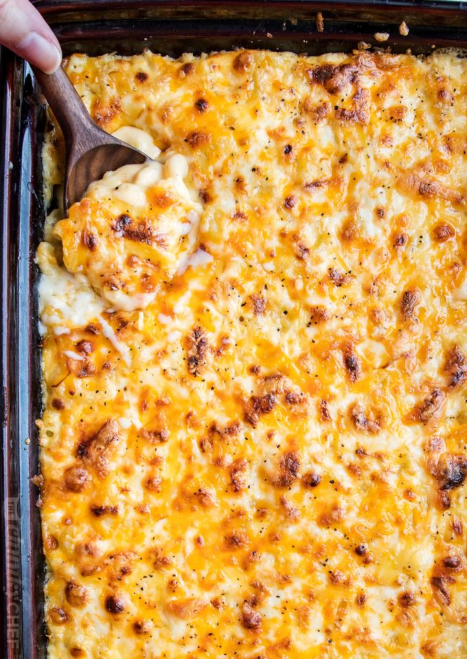

Mac n' Cheese Recipe

Description
Mac n' Cheese is a hearty meal made from cooked noodles combined with a cheese blend. Each bite is creamy and savory, and is sure to become a household staple.
Ingredients
- 1 small red onion, diced
- 16 ounce small pasta shells
- salt and ground black pepper to taste
- 1 pinch garlic salt
- 1 tablespoon butter
- 1/4 cup brown sugar
- 3 11 ounce cans of condensed cream of cheddar soup
- 2/3 cup shredded Havarti cheese
- 1/4 cup grated Parmesan cheese
- 1 1/2 cups shredded Cheddar cheese
Steps